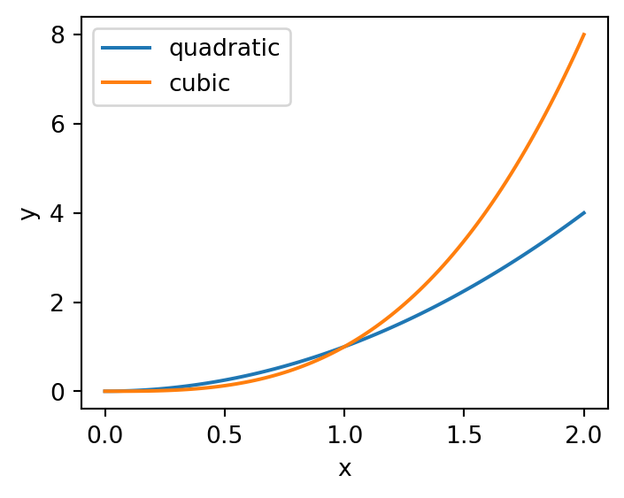

import matplotlib.pyplot as pltScientific Figures with Matplotlib
Default matplotlib is awful. It is hard to learn. There is a lot going on. It is not clear. And the matplotlib tutorial is awful (crazily it used to be worse). But the package is very good (once you get used to it). The customisation is amazing and it is so helpful when you want to make a specfic plot for your paper/thesis/poster.
Just a slight aside
Any tutorial that starts by telling you “everything on the figure is an artist” has no idea how people learn (what is an artist? Do I need to teach it to paint? will it work on its own?)
Importing Matplotlib
To import matplotlib you don’t import matplotlib because that would be obvious.
This downloads all the functions required to make most plots. Matplotlib contains a lot of other functions/classes used to actually do the drawing/making the image. They aren’t necessary for 99% of the figures you’ll make. You might also see people use matplotlib.pylab. This combines pyplot with numpy functions and is very MATLAB like. It is essentially deprecated and is not recommended at all.
Several ways of making a plot
First create some data
import numpy as np
import matplotlib.pyplot as plt
x = np.linspace(0,2,100)
y1 = x**2
y2 = x**3Pyplot-style
plt.figure(figsize=(4,3))
plt.plot(x, y1, label='quadratic')
plt.plot(x, y2, label='cubic')
plt.xlabel('x')
plt.ylabel('y')
plt.legend()
plt.savefig('pyplotxy.png')
plt.show()
Object Oriented or subplot style
fig, ax = plt.subplots(figsize=(4,3))
ax.plot(x, y1, label='quadratic')
ax.plot(x, y2, label='cubic')
ax.set_xlabel('x')
ax.set_ylabel('y')
ax.legend()
fig.savefig('subplotsxy.png')
plt.show()
Important
IGNORE PYPLOT STYLE IT IS AWFUL AND CONFUSING
While it is easy to get started with, eventually it only leads to headaches. Firstly, all the commands are slightly different so if someone has written code subplot style it is hard to change it to plt style. Secondly nearly everyone on stack overflow uses subplot style. My advice: start with subplot style and just slowly learn how to change things.
Figure vs Axes
I always found this confusing when I was learning. And I don’t think it is very intuitive (especially the plt.Figure).
Essentially the Figure is your canvas. It is the image you will download. It controls the size, the resolution and the layout of the image you create.
 1:
1:
An axis is an individual plot. You can have many Axes in a Figure but each axis will have one xlabel, one ylabel, one legend etc. All the elements that make up a plot (a chart?) can be adjusted and set on an individual axis.
Remember each Axis on a Figure can be adjusted individually but the quality of your image will depend on the settings of your Figure.
plt.subplots
After much messing about and trying different ways of creating matplotlib figures I have decided this is the only way. When you make a matplotlib figure start it with this line
fig, ax = plt.subplots()There are many settings you can change in plt.subplots
- number of rows/columns - how many axes you want
- dpi - number of dots per inch (resolution of image)
- figsize -
(width, height)in inches (increase if you need space) - sharex/sharey - common x axis or y axis for the plots
Main benefit is creating a grid of axis so you can have multiple plots in the same image.
fig, axes = plt.subplots(2,2)It creates a list of Axis instances (axes). To access a specific axis simply use the correct index (same as a python list).
# access top left corner
ax = axes[0,0]
ax.plot(x,y1)
# plot in top right corner
ax = axes[0,1]
ax.plot(x,y2)
Note
Note if you only have a row or column there is only one dimension (index). So axes[0] will be the first row/column axes[1] the second etc.
Create functions
Making good figures is hard so if you spend the time to make a function to plot some data that you will need again in the future make the code into a function. Even better add it to a .py file so you can import it in the future.
Just remember you save and show the figure. You manipulate the data with an axis. I don’t fully understand how this works in terms of memory but the way I approach plotting functions is to add a parameter to accept an axis and to create a new figure if an axis isn’t passed. For example
def myplotf(x,y,ax=None, **kwargs):
# create a figure if not given an axis
if ax is None:
fig, ax = plt.subplots()
else:
fig = None # stop not defined error when returning
# plot xy
ax.plot(x,y, **kwargs)
return fig, ax # if ax is passed as a param then fig will be NoneNote: **kwargs means keyword arguments. ** is a special operator in python that unpacks dictionaries. It means you don’t have to constantly rewrite many optional parameters. It also collects extra keyword arguments. For example, I might want to change the linestyle and alpha of my plot. I can call my function myplot(x,y, linestyle='-', alpha=0.5) and they will get passed to ax.plot within myplotf.
You might also see *args. * unpacks lists. So x,y is an unpacked list and might be specified in the functions definition as def myfunc(*args, **kwargs): (which isn’t very informative but happens more often than you would think.)
change dpi not figsize
seaborn
Good visualisation that is easy. This package is great for getting a nice figure quickly. They recently updated the tutorialand it is far more intuitive now.
Pros
- nice figures quickly
- easy to learn
- integrates really nicely with pandas
- can change theme and context (switch to poster or paper sized) with one line of code.
Cons
- customising figures can be tricky
- yet another way of manipulating matplotlib figures with figure level functions
- getting pandas dataframe into the right format can be tricky. (pd.melt will be your friend)
Creating a good figure is incredibly simple and the equivalent figure in matplotlib would take about 10 times the amount of code. This example from their tutorial summarises it nicely.
# Import seaborn
import seaborn as sns
# Apply the default theme
sns.set_theme()
# Load an example dataset
tips = sns.load_dataset("tips")
# Create a visualization
sns.relplot(
data=tips,
x="total_bill", y="tip", col="time",
hue="smoker", style="smoker", size="size",
)I personally prefer to use axes level functions (e.g. scatterplot, histplot) so I can customise the figure options but starting off the figure level functions (e.g. relplot, displot) are incredible.
Styles & Context
Even if you don’t use the seaborn plotting functions setting the theme and context are great for improving the aestethics. The set context is particularly useful for posters.
This seaborn tutorial is great and shows how you can even choose different themes for different subplot axes.
matplotlib has it’s own set of themes available. To set the theme for matplotlib it is very similar to seaborn.
plt.style.use('ggplot')
# plot as normal
...EllipsisTo see a list of the theme’s available
plt.style.available['Solarize_Light2',
'_classic_test_patch',
'_mpl-gallery',
'_mpl-gallery-nogrid',
'bmh',
'classic',
'dark_background',
'fast',
'fivethirtyeight',
'ggplot',
'grayscale',
'seaborn-v0_8',
'seaborn-v0_8-bright',
'seaborn-v0_8-colorblind',
'seaborn-v0_8-dark',
'seaborn-v0_8-dark-palette',
'seaborn-v0_8-darkgrid',
'seaborn-v0_8-deep',
'seaborn-v0_8-muted',
'seaborn-v0_8-notebook',
'seaborn-v0_8-paper',
'seaborn-v0_8-pastel',
'seaborn-v0_8-poster',
'seaborn-v0_8-talk',
'seaborn-v0_8-ticks',
'seaborn-v0_8-white',
'seaborn-v0_8-whitegrid',
'tableau-colorblind10']
Note
Different theme’s change different settings. Use plt.style.use('default') to reset before changing to a new theme.
Personally I think sns.set_context is great for switching between paper and poster images. The increase in line width and reduction of white space is great on a poster and is so simple to switch between the two. Note: The themes available in matplotlib contain seaborn poster and seaborn paper styles. These themes do not quite replicate the behaviour of sns.set_context and if you have a choice between the two use sns.set_context('poster') over plt.style.use('seaborn-v0_8-poster').
ggplot esque
They have an experimental interface that is recently added seaborn.objects. They have a nice run through here. Basic idea is you specify the data with a plot object and then add options such as type of plot (line/scatter/barchart) and data trasformations (aggregate/normalise).
Looks cool and intuitive but is in development and again will be tricky to customise.
Footnotes
Photo by Justyn Warner on Unsplash↩︎